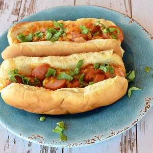

Hot dog

Variation on a hot dog. Kid approved. Experiment and use whatever combo of ingredients you wish.
Prep:10 mins / Cook:20 mins / Total:30 mins / Servings:8 / Yield:8 sandwiches
Ingredients
- 8 hot dogs, chopped
- 2/3 cup shredded Cheddar cheese
- 3 tablespoons pickle relish
- 3 tablespoons ketchup
- 2 teaspoons prepared mustard
- 3 tablespoons chopped onion
- 8 hot dog buns
Directions
- Preheat an oven to 325 degrees F (165 degrees C).
- Stir the hot dogs, Cheddar cheese, relish, ketchup, mustard, and onion together in a bowl; spoon into the hot dog buns. Wrap each sandwich in aluminum foil.
- In a skillet, brown ground beef. Using a fork, mix cottage cheese, eggs, garlic powder, parsley, salt and pepper. In a separate bowl combine tomato paste and tomato sauce.
- Bake in the preheated oven until hot, about 20 minutes. Serve immediately.